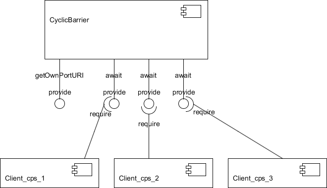

See: Description
| Class | Description |
|---|---|
| ArrayBlockingQueue | |
| CountDownLatch |
A component representing a CountDownLatch
(java.util.concurrent.CountDownLatch).
|
| CyclicBarrier | |
| Semaphore |
Composants/outils de synchronisation, offrant des services parfois bloquant afin de permettre à des composants clients de se synchroniser entre eux.
Le package
fr.upmc.components.extensions.synchronizer.components.syncTools
fournit les composants qui constituent les différents outils de
synchronisation.
L’architecture d’un outil de synchronisation est caractérisée par plusieurs points.
Tout d’abord, l’outil de synchronisation est un composant qui ne requiert aucun thread interne. Dans le modèle de composants que nous avons utilisé, chaque composant doit indiquer dans son constructeur s’il nécessite un pool de thread interne ou non.
Mais dans notre situation, nous n’en avons pas besoin. En effet, notre but est de synchroniser les threads d’exécution des composants clients :
La deuxième particularité dans cette architecture est la création dynamique de ports pour chacun des clients. L’URI de port récupéré lorsqu’un client appelle une méthode provide[type_de_l’outil]URI sur le SynchronizerManager permet de se connecter sur le port de connexion de l’outil de synchronisation qui ne fournit que la méthode provideOwnPortURI. Celle-ci crée un nouveau port d’utilisation du service et renvoie l’URI du port en question. C’est donc celui-ci qui offre les services du composant.
La deuxième particularité dans cette architecture est la création dynamique de ports pour chacun des clients. L’URI de port récupéré lorsqu’un client appelle une méthode provide[type_de_l’outil]URI sur le SynchronizerManager permet de se connecter sur le port de connexion de l’outil de synchronisation qui ne fournit que la méthode provideOwnPortURI. Celle-ci crée un nouveau port d’utilisation du service et renvoie l’URI du port en question. C’est donc celui-ci qui offre les services du composant.
Ces ports sont utiles pour deux raisons principales. Tout d’abord, cela permet de debugger plus facilement car nous pouvons identifier directement chacun des appels en fonction des URI utilisées. La deuxième raison est que la spécification de Java n’assure pas que pour un même client, plusieurs threads soient disponibles pour des appels sur un même objet distant.
Si nous n’avions pas un objet distant par client (les ports), on pourrait rencontrer un problème dans le cas d’un composant client ayant deux threads et devant se synchroniser deux fois avec le même groupe de synchronisation. Si tel était le cas, le premier appel du client sur l’objet distant utiliserait un premier thread pour appeler la méthode bloquante de l’outil de synchronisation. Cependant, le deuxième appel de ce même client (avec son deuxième thread) pourrait, selon l’implémentation de la JRE utilisée, ne pas obtenir de thread pour l’exécution de son appel et serait bloqué en attente de la libération du premier thread. Ainsi, étant donné que l’outil de synchronisation est en attente de l’appel de ce thread sur son service pour débloquer tous les autres threads, on se retrouve dans une situation d’inter-blocage (deadlock). Tous les threads du groupe sauf un attendent le dernier thread et celui-ci attend l’un des threads du groupe = deadlock.